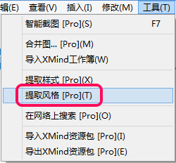
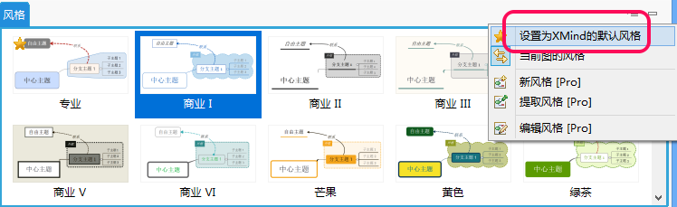
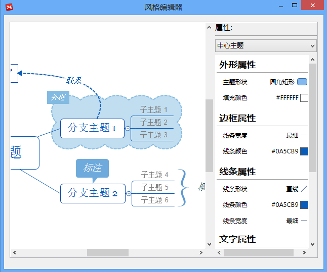

风格和风格编辑器
风格是思维图里面某些属性如颜色、外形、线条形状等的结合。一个简单的步骤您即可应用风格到整张思维图。您也可设计自己的风格并保存以备以后使用。XMind自带了一些已经设计好的思维图供您使用。
修改风格- 点击“窗口 - 风格”打开风格视图；
- 双击风格应用。
- 通过选择颜色、外形、线条和背景色设计您自己的风格；
- 在菜单栏点击“工具 - 提取风格”；
 - 在风格视图命名提取的新风格；
- 现在您可应用您的新风格到别的思维图了。
注意: 每种风格仅能使用一种主题和外框样式。
设置默认风格若您打开一个空白思维图，此思维图已被应用了默认风格，您也可以设置任一风格为您的默认风格。
- 打开风格视图并点击目标风格。
- 点击风格视图右上角下拉菜单的星形图标。

风格编辑器您可在风格编辑器编辑并预览您的风格。
- 点击“视图 - 风格”打开风格视图；
- 单击目标风格并选择“编辑风格”；
- 在对话框右上角选择对象并修改相关属性设置；
- 点击“保存为新风格”。
